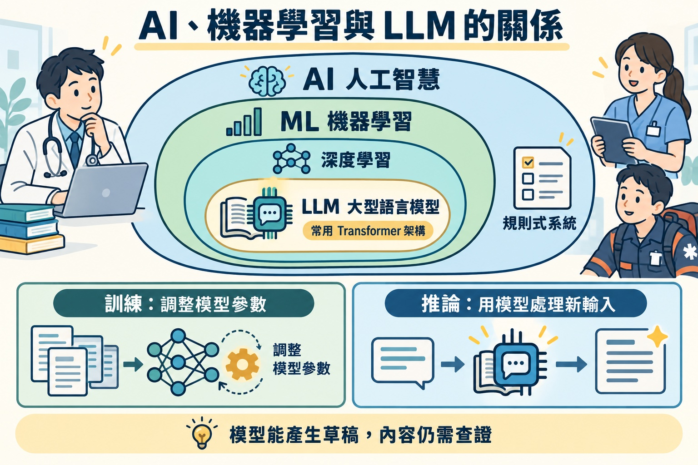
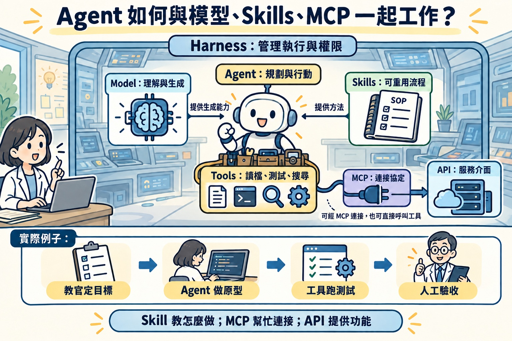
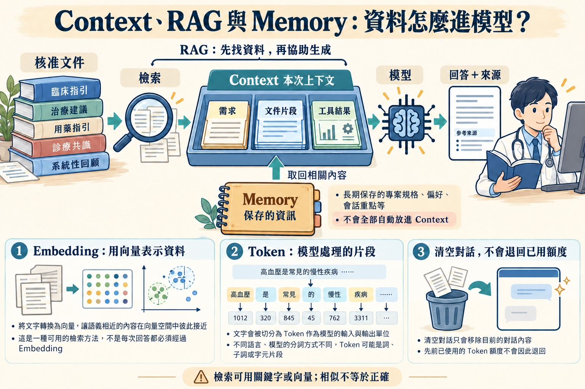
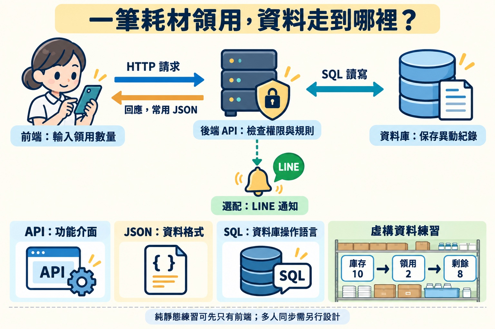
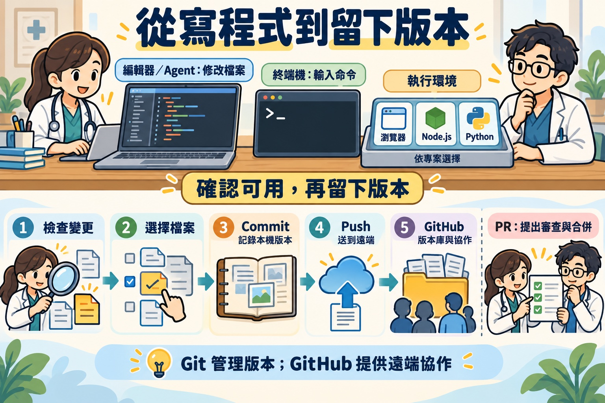
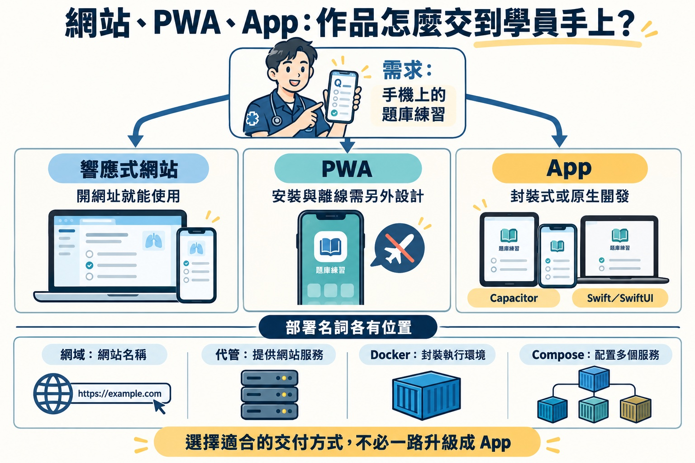
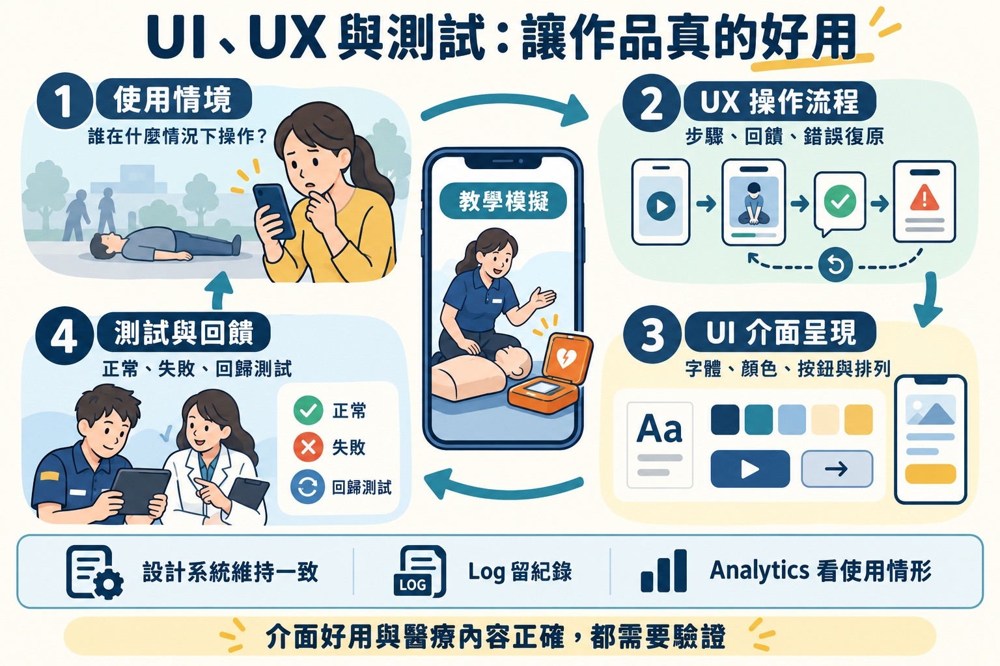
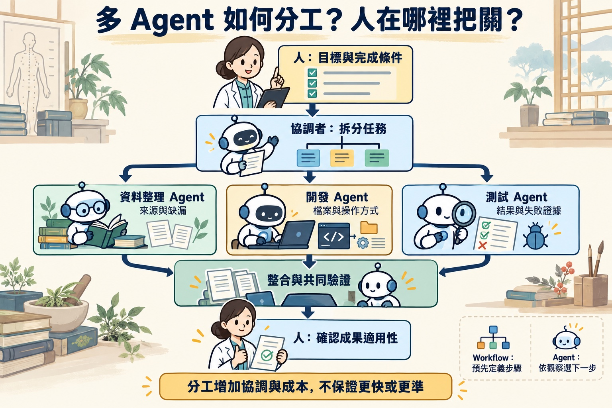

延伸閱讀 · 把名詞連成一張地圖
知道名字之後，
看懂它們如何一起工作
從「AI 幫我做一個耗材練習網頁」出發，追蹤模型、工具、資料與部署各自負責的事。每一區都能單獨閱讀，展開卡片可看例子與容易混淆的地方。
讀圖方式：「包含」表示分類；「使用」表示搭配；箭頭標示資料或任務的方向。這些名詞不是一條必須全部安裝的清單。
01 · 分類關係
AI、機器學習、深度學習、LLM 是什麼關係？
常採用 Transformer 架構

Transformer、LLM、聊天介面有何不同？
Transformer 是神經網路架構；LLM 是大型語言模型；聊天介面是讓人使用模型的產品介面。架構、模型、產品是不同層次。模型能寫出程式，不表示它已執行並驗證程式。
訓練 Training 與推論 Inference
訓練會透過資料調整模型參數；推論是用已訓練的模型處理新輸入。醫師貼一段虛構病例請模型整理，是推論；把文件交給聊天工具，不代表當場重新訓練了模型。
Token 與 Attention
Token 是模型處理的片段，不固定等於一個中文字或英文單字。Attention 讓不同位置的資訊彼此參照；流暢輸出仍可能包含錯誤，不能當成事實查證。
教學者的應用：先理解模型能產生草稿，再由自己核對內容與教學目標。無須先學會注意力公式才能開始寫程式。
02 · 組合關係
模型、Agent、Harness、Skills、MCP、API
規劃 → 行動 → 觀察 → 調整
理解需求、產生下一步
提供可重用流程與資源
讀檔、測試、搜尋等實際操作
連接工具與資料的一種標準協定

Prompt 與 Skill：一次交代，還是重複使用？
Prompt 描述這次任務。Skill 把重複工作整理成指令與資源，例如「先核對題目來源，再分開保存官方答案與 AI 解析」。Skill 可包含 SKILL.md、腳本及範本；各產品支援方式需確認。
MCP 與 API：兩者可以一起用
API 是程式功能的介面；MCP 是 AI 應用與外部工具、資料互通的標準協定。例如 Agent 經 MCP 使用擷取工具，工具再呼叫 Firecrawl API。加入 MCP 不會自動取得所有權限。
Sandbox 與 Harness
Sandbox 限制可接觸的環境；Harness 涵蓋更廣的執行管理。Agent 在允許的範圍內仍可能改檔、跑命令或連網。先看目前工作區與工具權限，才知道影響範圍。
教官的應用：Agent 建立 AED 模擬介面；Skill 提供固定教材流程；瀏覽器工具測試按鈕；Harness 留下測試與修改紀錄。醫療步驟仍以核准教材為依據。
03 · 資料關係
Context、Memory、RAG、Embedding 與費用
需求＋對話＋檔案片段＋工具結果

Context 與 Memory
Context 是當下送給模型的工作資料。Memory 是跨次保存的資訊機制，例如偏好或專案紀錄；要被取回、加入本次上下文，模型才可能使用。把重要決定寫進 README 或 SPEC.md，比假設聊天永遠記得更可靠。
Embedding 與向量資料庫
Embedding 把文字等資料表示成數字向量，方便比較相似性；向量資料庫可保存並搜尋這些向量。相似不代表正確，也不代表文件版本有效。小型題庫可以先用主題標籤或關鍵字搜尋。
Firecrawl、RAG 與訓練
Firecrawl 取得網頁內容；RAG 在回答時取用資料；模型訓練調整參數。三者做的事不同。取得官方網頁後，仍要核對日期、擷取缺漏與適用範圍。
Token、上下文容量、額度與帳單
Token 是處理單位；上下文容量是一次能容納的範圍；使用額度與帳單是產品的計量規則。縮短或清空對話不會退回已消耗額度。省用量可先限定檔案與問題，保留必要錯誤證據和測試。
醫師的應用：針對虛構病例，從核准教學文件找相關段落，再比較自己的推理與 AI 草稿；保留來源，回查原文。
04 · 系統關係
前端、後端、API、JSON、資料庫與 SQL
HTML 結構／CSS 樣式／JavaScript 互動
← 回應，常用 JSON
驗證身分、權限與數量規則
關聯式資料庫常用 SQL
後端也可依需求連接 LINE、AI 或其他服務；這些是分支，不必先通過資料庫。純靜態練習可以只有前端。

API、HTTP、JSON 各負責什麼？
API 定義可用功能；HTTP 是常見網路溝通協定；JSON 是常見資料格式。JSON 不是資料庫，也不是所有 API 都必須使用它。
耗材例子：GET 讀取品項；POST 提交領用。伺服器回傳結果，畫面再更新。HTTP 狀態碼 200 常表示成功、400 表示請求問題、401 表示缺少有效驗證、403 表示拒絕存取、500 表示伺服器錯誤。
資料庫與 SQL
資料庫保存資料；SQL 是操作關聯式資料庫的語言。先分清「品項表」與「領用異動表」，再考慮查詢語法。例如 SELECT 查詢、WHERE 篩選、JOIN 連接資料、GROUP BY 彙整。
多人同時領用時，需要讓檢查與扣庫存一致完成，通常涉及交易 Transaction。只在畫面上減數字，不能解決多人同步。
localStorage、試算表與正式資料庫
localStorage 保存在目前瀏覽器與網站來源下，不是跨裝置同步。試算表方便整理，但多人寫入、權限、稽核和一致性需另外設計。資料庫也不會自動讓系統安全，仍需設定存取與備份。
登入、授權、快取與檔案儲存
Authentication 確認「你是誰」；Authorization 決定「你能做什麼」。Cache 快取常保存可重用結果；Object Storage 適合圖片、影片等檔案。這些服務依需求加入，不是初版的必備配備。
醫護人員的應用：介面接收領用數量；後端確認權限與庫存；資料庫保存異動。學員應能說明資料存在哪裡，以及重整畫面後會不會保留。
05 · 工作流程關係
終端機、Python、Node.js、Git、GitHub、PR
修改專案檔案
瀏覽器、Node.js 或 Python

終端機、Shell 與 CLI
終端機提供輸入與輸出的視窗；Shell 解讀命令；CLI 是用命令操作工具的介面。新手先會辨認目前資料夾、切換位置、執行專案提供的啟動指令，無須背完整指令表。
Python、Node.js、pip、npm
Python 可執行 Python 程式；Node.js 讓 JavaScript 在瀏覽器之外執行；pip 與 npm 常用來管理各自生態的套件。純 HTML/CSS/JavaScript 網站可以直接用瀏覽器，不需要為了「使用 AI」全部安裝。
Git 與 GitHub
Git 是版本控制工具，Commit 記錄本機版本；GitHub 是提供遠端版本庫與協作功能的平台。Branch 分支用於隔開工作；PR 提出審查；Merge 將變更合併。Pull 會取得並整合遠端變更，可能需要處理衝突。
除錯與版本如何配合？
先記錄可重現步驟與預期／實際差異，再找根因、做小修正、重跑測試並提交。不要把「AI 說修好了」當作測試證據；保留可回查的穩定版本。
EMT 的應用：修改 AED 模擬按鈕前保留版本；修好連按造成的跳步後，重測正常操作和重新開始。
06 · 交付方式關係
網站、PWA、App、Docker 與網域
瀏覽器開網址，適應不同螢幕
Web 技術加上安裝、離線等設計
平台專案、裝置功能與商店流程

Capacitor 與 Swift／SwiftUI
Capacitor 可把 Web 專案帶進原生平台，並透過外掛使用裝置功能；Swift 是程式語言，SwiftUI 是 Apple 平台介面框架。封裝或原生 App 都需要平台測試與發布流程，不是改副檔名就能上架。
Docker、Image、Container、Compose
Image 是打包範本；Container 是依映像執行的環境；Compose 描述多服務如何配置。它們協助一致地執行程式，不能取代程式本身、資料庫設計或網站代管。進入 Docker 與 Firecrawl 補充。
GitHub Pages、伺服器、網域與 HTTPS
靜態代管供應 HTML、CSS、JavaScript；自訂後端需支援相應執行環境的服務。網域是名稱，DNS 幫忙解析名稱，HTTPS 保護傳輸。買了網域仍需要網站代管；上傳 compose.yaml 到 Pages 不會啟動容器。
CI/CD、部署與維護
CI 可自動檢查整合後的程式；CD 可協助交付或部署。成功建置不代表醫療內容已覆核。部署後還要用實際網址確認功能、圖片與手機操作，並保留更新和回復方式。
教學者的應用：先分享可在手機開啟的題庫網站；確定有離線需求再設計 PWA，需要更深入裝置功能時再評估 App。
參考：MDN：PWA、Capacitor 文件。
07 · 品質關係
UI、UX、設計系統、測試與回饋
誰、在哪裡、做什麼
步驟、回饋、錯誤與復原
字體、按鈕、顏色與排列
設計系統維持元件一致；測試與使用者回饋檢查這套設計是否真的可用。

怎麼把設計需求說給 AI？
比「做漂亮一點」更具體的說法是：「使用者是操作訓練機的 EMT，手機直向使用；主要操作一步可見，按鈕有文字標籤，錯誤時說明原因與恢復方法。請先展示流程與畫面草圖。」
QA、測試與 Debug
QA 是維持品質的做法；測試提供實際行為的證據；Debug 找出並修正原因。用正常、錯誤、邊界與回歸案例測試，再由學員實際操作。自動測試通過與醫療內容正確，是不同的驗證工作。
Log、Analytics 與回饋
Log 協助追查事件；Analytics 彙整使用行為；回饋說明使用者的感受和困難。雷達圖能呈現練習面向，仍應顯示題數、來源和時間，不能用一次少量作答就斷言專業能力。
教官的應用：觀察學員是否找得到「重新開始」；醫師／教學者再確認案例內容。介面方便與內容可信，都要各自驗證。
08 · 分工關係
單一 Agent、Workflow、多 Agent 與人的位置
回傳來源與缺漏
回傳檔案與操作方式
回傳測試與失敗證據

Workflow 與 Agent
Workflow 偏向預先定義的步驟；Agent 可依觀察選擇下一步。實務上常混合使用，例如固定「取得資料 → 核對 → 匯入」流程，其中由 Agent 協助整理缺漏。
什麼時候值得分工？
工作可明確拆開、各自有輸入輸出與驗收方式時較適合，例如一個做題庫格式檢查，一個測試介面。只改一段文字通常不值得成立一個團隊。
多一位 AI 審查就可靠了嗎？
不同 Agent 仍可能共享同樣錯誤。審查要提出來源、測試和可重現證據；模型數量不能替代醫療專業覆核。
把整張地圖用在自己的作品
選題庫、AED 模擬或耗材練習，試著回答下面三題，再展開比對。
① 作品需要 AI 幫忙開發，完成後也一定要接 AI API 嗎？
不一定。固定題目計分、固定訓練步驟、虛構庫存扣量，都可以由一般程式完成，執行時不必呼叫模型。
② 哪些名詞能同時出現在同一條工作流程？
Agent 依 Skill 整理流程，經 MCP 呼叫資料工具，工具用 API 取得資料；結果成為 Context，再由模型生成草稿。每一層有不同功能，並非每個專案都需要全部組合。
③ 網頁能開啟、GitHub 已上傳、資料會保存，是同一件事嗎？
是三件事：能開啟是執行結果；上傳 GitHub 是檔案與版本的遠端保存；使用者輸入是否持久保存，取決於 localStorage、伺服器或資料庫等實作。